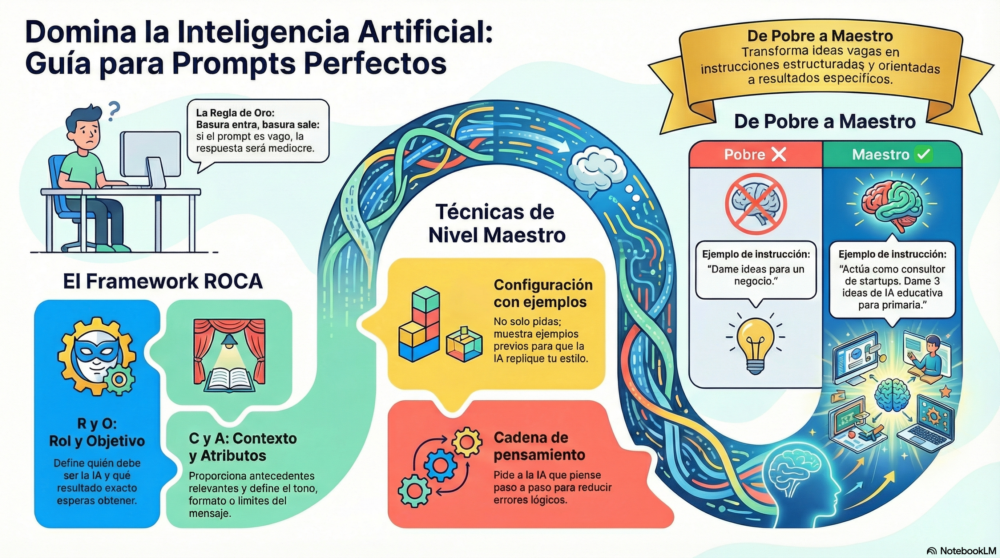

¡Hola a todos! 👋
En esta sesión vamos a descubrir qué es realmente un Chatbot y un Agente de IA 🤖. Vamos a desmitificar qué hay detrás de las herramientas que usas a diario, como ChatGPT, Dola y otras tecnologías 💡.
El objetivo principal es entender cómo funcionan por dentro para aprender a aprovecharlas al máximo, ahorrar tiempo y hacerlas nuestras mejores aliadas en la rutina diaria 🚀.
📍 Paso 1: Haz clic aquí para abrir la presentación 📊
PresentaciónActividad: Contesta las siguientes preguntas, en una hoja
-
1
¿Cuál es la diferencia principal entre un Chatbot y un Agente de IA en cuanto a su forma de trabajar?
-
2
Si necesitas que la IA responda una duda teórica de clase, ¿qué herramienta usas (Chatbot o Agente) y por qué?
-
3
¿Por qué se dice que un Agente de IA requiere menos supervisión humana que un Chatbot?
-
4
Menciona un ejemplo de tarea para un Chatbot (como Gemini) y un ejemplo de tarea para un Agente de IA.
Práctica con Gemini: Construcción de un Juego de Pong (HTML/JS)
Instrucciones para los alumnos:
- Abrir Gemini.
- Copiar y pegar el siguiente promp tal cual en el chat:
"Actúa como un programador experto en desarrollo web. Genera el código completo en un solo archivo HTML (con CSS y JavaScript integrados) para un juego clásico de Pong. Requisitos: 2 raquetas (jugador vs computadora), una pelota que rebote en los bordes y en las raquetas, marcador de puntos en pantalla y controles con las teclas Flecha Arriba y Flecha Abajo. Incluye instrucciones para guardar el archivo como pong.html y abrirlo en el navegador."
Guardar el código en un bloc de notas como pong.html y abrirlo en el navegador para probarlo.
Práctica en Clase: Desafío de Interacción con Gemini
Instrucciones para los alumnos (en su computadora/celular):
- Paso 1: Entrar a Gemini.
- Paso 2: (Prueba de respuesta libre): Escribir una pregunta vaga como "Explícame la informática" y anotar en su cuaderno qué tan útil fue el resultado.
- Paso 3: (Ajuste de instrucciones): Volver a preguntar, pero siendo específicos: "Explícame en 3 viñetas qué es el hardware y da 2 ejemplos" y comparar el resultado.
- Paso 4: (Límite del Chatbot): Pedirle a Gemini "Crea un archivo de texto en mi escritorio llamado notas.txt".
• ¿Qué respondió Gemini cuando le pediste crear el archivo en tu escritorio y por qué un chatbot no puede hacerlo?
Instrucciones y Prompts Directos
"Crea una carpeta en el escritorio llamada Juego_Snake. Dentro, genera el código completo de una Víborita clásica (Snake) en un archivo index.html con CSS y JavaScript integrados. Debe incluir: serpiente, comida, puntaje, colisiones y controles de flechas. Al finalizar, abre el archivo en el navegador para probarlo."
"Actúa como un agente de administración de sistemas. Descarga e instala en esta computadora la aplicación [Spotify / Discord] de manera automatizada. Si requiere dependencias, ejecútalas sin pedir mi intervención."
"Abre el navegador web, navega a youtube.com, busca el término 'inteligencia artificial' y reproduce automáticamente el primer video de la lista de resultados."
Descarga los dos siguientes archivos.
1.- Instrucciones de la actividad
2.- Ejercicio de excel
SUBIR LOS DOS ARCHIVOS EL WORD Y EXCEL